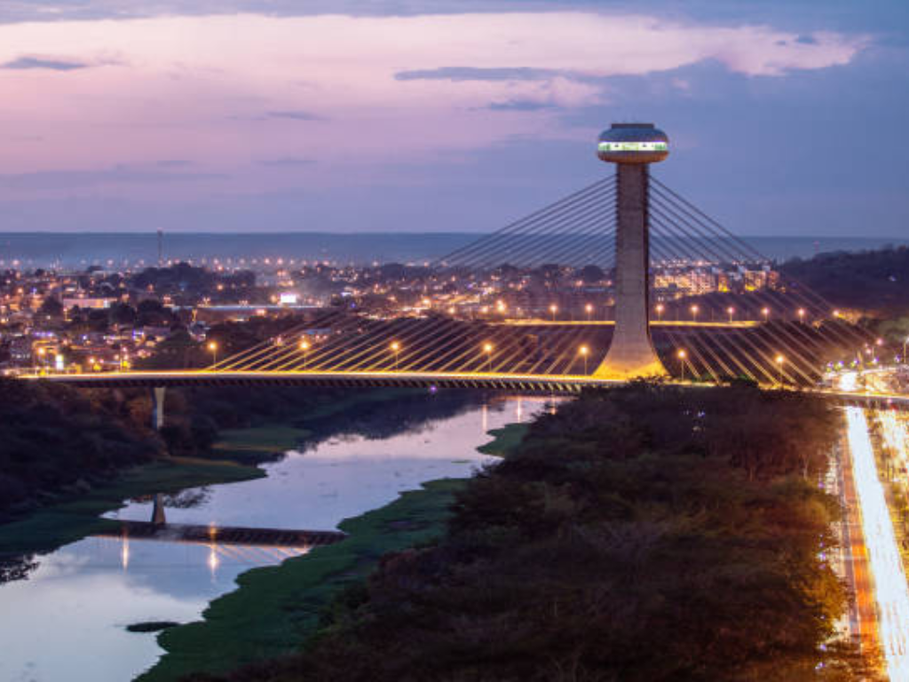

Piauí é um estado localizado na região Nordeste do Brasil, conhecido por sua diversidade natural, riqueza cultural e importância histórica. Sua capital, Teresina, destaca-se por ser a única capital nordestina que não está situada no litoral, além de possuir forte crescimento urbano e econômico. O Piauí abriga importantes atrações naturais, como o Parque Nacional da Serra da Capivara, reconhecido mundialmente por seus sítios arqueológicos e pinturas rupestres. O estado também possui belas paisagens litorâneas, tradições culturais marcantes e uma economia baseada na agricultura, pecuária, comércio e produção de energia, consolidando-se como uma região de grande valor histórico, ambiental e cultural no Nordeste brasileiro.

Voltar